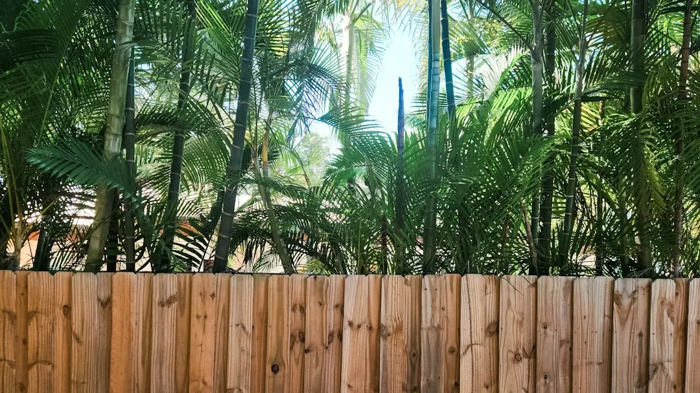

Start by identifying the fence's job, then inspect the full run before choosing a material. Leaning panels, rotten posts, loose sheets and dragging gates may need targeted repairs, while an ageing boundary may suit replacement. Ask for the run length, post spacing, footing type, gate work and old fence removal to appear in writing. Colour, upkeep, ground conditions, wind exposure and access should also be discussed before work begins.
For homeowners comparing perth fence installation options, the practical decision is whether the existing boundary needs a targeted repair, a full replacement, or a new design suited to privacy, security, pool access or street appeal.
Perth Fence Installation Explained
Perth Fencing Pros describes common jobs involving leaning panels, rotten posts, storm damaged sheets, dragging gates and ageing boundaries. Before comparing finishes, decide whether the fence is mainly for privacy, security, pets, pool separation or street appearance. That purpose affects height, screening, access and gate requirements.
Inspect the full run and record soft or damaged posts, loose sheets, leaning sections, corners, changes in level and nearby features. Access should be included in the brief because it can affect how materials and removed fencing are handled. The business asks customers to describe the run and anything nearby that could affect the work, so photographs and approximate measurements are useful preparation.
- Estimate the boundary length.
- Note gates, corners and difficult access.
- Describe the existing material and visible damage.
- State the main function the new or repaired fence must provide.
Decide whether repair or replacement fits
A leaning boundary does not automatically need rebuilding. A few rotten posts or damaged panels may be repairable, while a run that has reached the end of its life may be clearer to replace. Ask which parts can remain and which parts are affecting the line of the fence. A site inspection can show whether the visible problem is limited or extends along the run.
Old fibro needs its own scope. Perth Fencing Pros says it may contain asbestos and describes specialist removal before a replacement fence is installed. Ask for removal and cartage to be listed, rather than assuming they are included. If storm damage has pulled sheets out, identify the affected sections when requesting an assessment.
| What you see | Possible direction | Question to ask |
|---|---|---|
| Rotten posts or loose sheets | Targeted repair | Which parts can be retained? |
| Long ageing run | Full replacement | What removal is included? |
| Old fibro boundary | Specialist removal planning | Is cartage listed separately? |
For a boundary focused comparison, see this Perth boundary fencing guide.
Choose materials by upkeep and appearance
Colorbond steel is described as a low upkeep choice for privacy and security, with matching gates available. Aluminium slat and batten fencing creates a modern line, offers adjustable privacy and requires very little upkeep. Timber gives a warmer appearance but needs more care. The useful comparison is not only visual. Consider how much maintenance is acceptable and what the boundary must do.
Ground and wind exposure also affect planning. The published guidance says post depth and spacing are considered for the block before construction. Ask how those details suit the actual run, particularly where the boundary is long, the ground is difficult or a solid fence will meet greater wind exposure.
- Choose Colorbond for a solid, low upkeep boundary.
- Consider aluminium slat or batten for a modern appearance and adjustable privacy.
- Consider timber where a warmer style is preferred and ongoing care is acceptable.
Plan gates and pool barriers separately
A gate should be assessed with the fence rather than added as an afterthought. A gate that drags or will not latch can indicate a sagging post or tired hinges. Record the gate width, swing direction, latch problem and preferred finish so the quote addresses the complete job.
Pool fencing has a different function from a standard privacy boundary. The published guidance describes glass and aluminium barriers designed to stop young children reaching pool water unsupervised. Glass keeps the water visible from the house, while aluminium provides a firmer line and more screening. Ask how the proposed barrier will suit the pool area, access points and applicable pool fencing standard.
Front fencing can place greater weight on street appearance, while a back boundary may prioritise privacy or security. Stating the main purpose helps the material and gate choices stay aligned.
Use the written quote to compare scope
A useful quote should identify the run length, post spacing, footing type and whether old fence removal is included. Also check gates, disposal and access conditions. Two prices are difficult to compare when one leaves preparation, removal or gate work unstated.
Installation timing depends on the run length, material and ground. Gates and old fibro removal can add work, and the published guidance says a realistic timeframe is easier to provide after the site has been seen. Confirm the sequence for removal, preparation, posts and footings, panels or rails, gates and final checks.
Perth Fencing Pros lists coverage across Perth WA and nearby suburbs including Northbridge, East Perth and West Perth. When discussing a local job, describe the actual access, ground conditions and wind exposure instead of relying on the suburb name alone. Bring photographs, approximate measurements and a short problem description to the first conversation.
- Define the purpose. State whether the boundary is mainly for privacy, security, pets, pool separation or street appearance.
- Inspect the existing run. Note leaning sections, rotten posts, loose sheets, gate faults, access limits and nearby features.
- Choose a material. Compare Colorbond, aluminium slat or batten, and timber against the upkeep and appearance you will accept.
- Check the quote. Confirm run length, post spacing, footing type, gates, removal and difficult ground work before agreeing to the scope.
| What you see | What to clarify | Why it affects the scope |
|---|---|---|
| Leaning panels | Are posts or panels responsible? | The visible defect may not cover the full problem. |
| Dragging gate | Are hinges, latch or post involved? | Repair and replacement work differ. |
| Old fibro | Is specialist removal required? | Removal and cartage should be listed. |
Common questions
How long can fence installation take in Perth? The timeframe depends on the run length, material, ground, gates and whether an old fibro fence must be removed. A realistic timeframe is easier to provide after the site has been inspected.
How much does a new fence cost in Perth? Cost mainly follows the metres of fencing and the material. Gates and old fibro removal can also affect the price, so a written quote after measurement is more useful than a broad estimate.
Can a leaning fence be repaired instead of replaced? Sometimes. A few rotten posts or damaged panels may be repairable, while a run at the end of its life may need replacement. The full run should be checked before choosing.
Which fence material needs the least upkeep? Colorbond is described as needing little upkeep, while aluminium slat or batten requires very little upkeep. Timber gives a warmer look but needs more care.
What should a fencing quote include? Check that it names the run length, post spacing, footing type and whether old fence removal is included. Confirm gates, disposal and access or ground issues as well.
This guide covers planning, repair decisions, materials, gates, pool barriers and written quote checks for residential fencing in Perth.